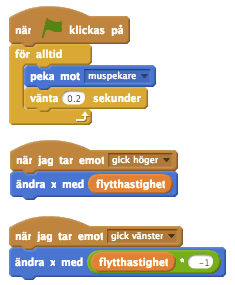

Checklista
Du kan ge ditt monster ögon som följer muspekaren när den rör sig över skärmen. Ditt monster kan ha så många ögon som du vill, till och med åtta, som en spindel! Eftersom vi vill att våra monsterögon ska följa muspekaren hela tiden så måste vi använda
för alltid-blocket. När den gröna flaggan-scripten har startat så vill vi att ögonen ska peka i riktining mot muspekarenför alltid, och justeras flera gånger i sekunden.
Notera att vi behöver sända event när vi rör på monstret så att ögonen flyttas tillsammans med kroppen och de andra kroppsdelarna. Vad mer kan du få ögonen att göra? Om du flyttar muspekaren mellan ögonen så kommer ögonen titta i kors!